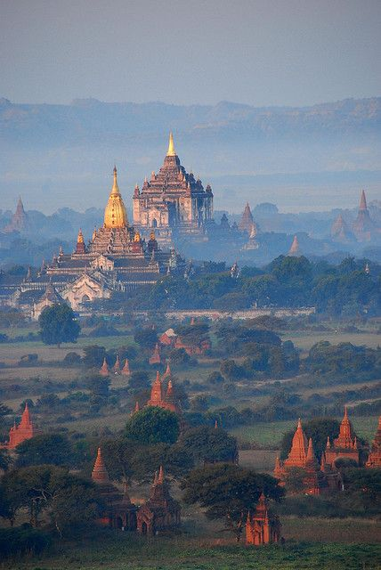
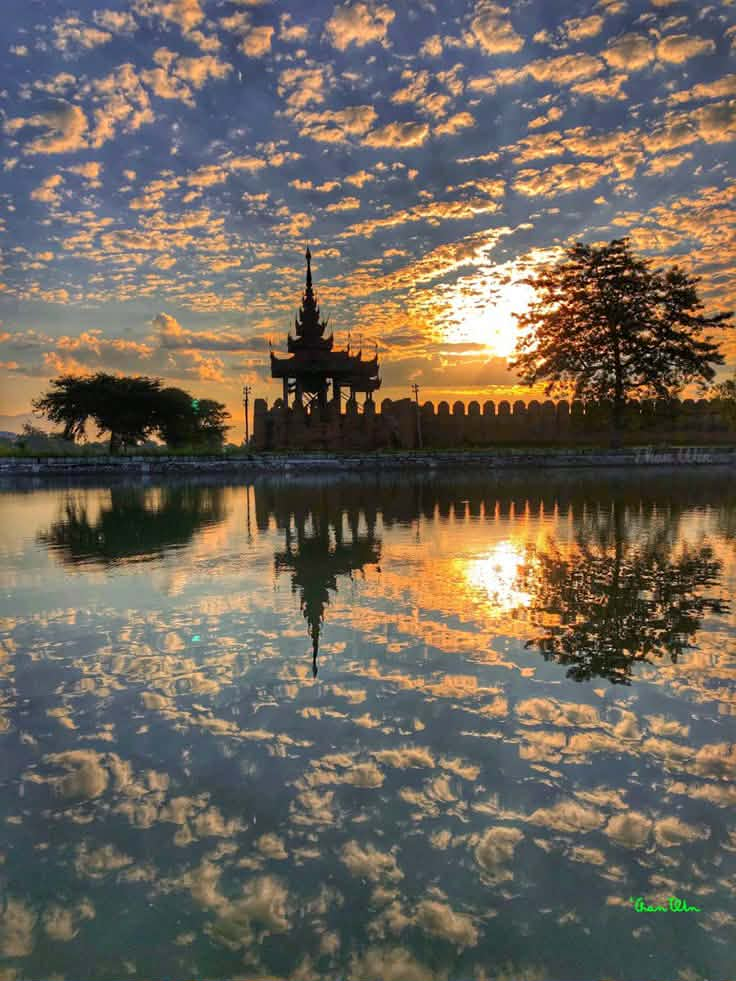
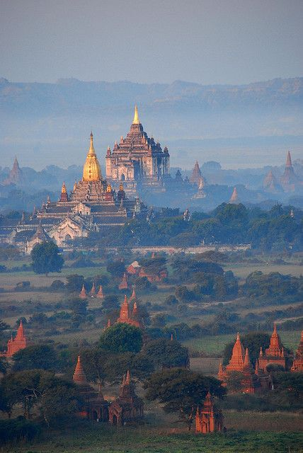
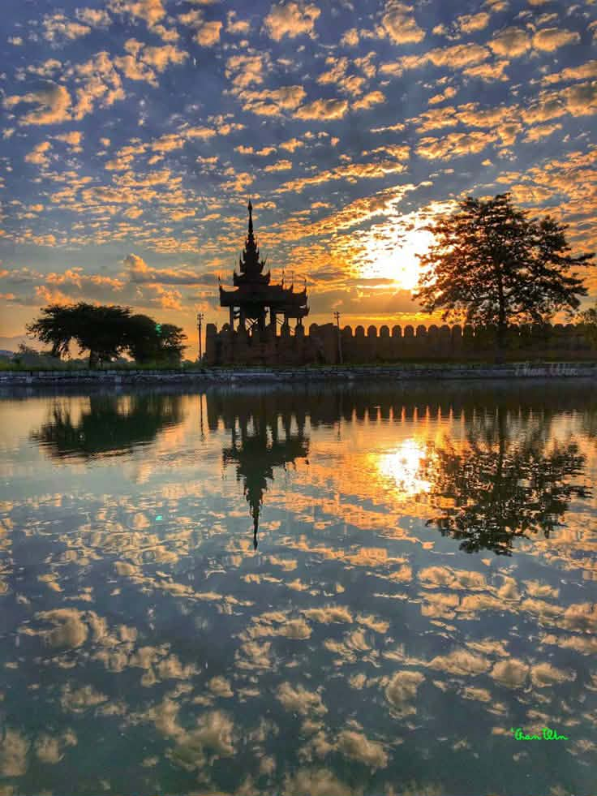

မြန်မာ့အလှကို အချက် ၄ ချက်နဲ့ အနှစ်ချုပ်ရရင် -
* သဘာဝအလှ: မြောက်ဘက်က နှင်းဖုံးတောင်တန်း၊ အလယ်ပိုင်းက ဧရာဝတီမြစ်ဝှမ်းနဲ့ တောင်ဘက်က သာယာတဲ့ ကမ်းခြေကျွန်းစုတွေအထိ ရှုခင်းစုံလင်တာ။
* ဗိသုကာအလှ: ပုဂံက စေတီပုထိုးတွေနဲ့ ရွှေတိဂုံစေတီတော်လို ကမ္ဘာကျော် ရွှေရောင်ဝင်းပတဲ့ ဘာသာရေး အဆောက်အအုံတွေရဲ့ ခန့်ညားမှု။
* ရိုးရာအလှ: ကမ္ဘာမှာ တစ်ခုတည်းသော သနပ်ခါး ယဉ်ကျေးမှု၊ ရိုးရာလုံချည် ဝတ်ဆင်မှုနဲ့ ထူးခြားတဲ့ ဒေသန္တရ အစားအစာများ။
* စိတ်နှလုံးအလှ: မြန်မာလူမျိုးတွေရဲ့ ရိုးသားဖြူစင်မှု၊ ဖော်ရွေပျူငှာမှုနဲ့ အလှူအတန်းရက်ရောတဲ့ "ဧည့်ဝတ်ကျေပွန်မှု" စိတ်ဓာတ်။
တစ်ခွန်းတည်းနဲ့ ပြောရရင် မြန်မာ့အလှဆိုတာ "ရွှေရောင်လွှမ်းတဲ့ သမိုင်းကြောင်းနဲ့ စိတ်ထားနူးညံ့တဲ့ လူမျိုးတို့ ပေါင်းစပ်နေခြင်း" ပဲ ဖြစ်ပါတယ်။
မြန်မာနိုင်ငံရဲ့ ထင်ရှားတဲ့ ဒေသတစ်ခုခု (ဥပမာ- ပုဂံ၊ အင်းလေး) အကြောင်းကို အကျဉ်းချုပ် ထပ်သိချင်ပါသလား? သင်သိလိုတာကို ပြောပြပေးနိုင်ပါတယ်။
 


